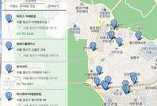

지도
- 지도 생성하기

- 지도 이동시키기
- 지도 레벨 바꾸기
- 지도 정보 얻어오기
지도 레벨, 중심좌표, 지도 타입, 지도 영역정보를 얻어와 표출합니다.

- 지도에 컨트롤 올리기
- 지도에 사용자 컨트롤 올리기
- 지도 이동 막기

- 지도 확대 축소 막기
마우스 휠이나 멀티터치로 지도 확대, 축소 기능을 막습니다. 상황에 따라 지도 확대, 축소 기능을 제어할 수 있습니다.

- 지도에 교통정보 표시하기
지도에 현재 실시간 교통 정보가 컬러로 표시되어 있는 라인을 올릴 수 있습니다.
- 지도에 로드뷰 도로 표시하기
지도 위에 로드뷰 정보가 있는 도로를 표시할 수 있습니다.
- 지도에 지형도 표시하기
지도 위에 지형 정보를 알 수 있는 지형도를 표시할 수 있습니다.
- 지도 타입 바꾸기1
교통정보, 로드뷰 도로정보, 지형도 정보를 버튼 클릭에 따라 지도 타입을 변경합니다.
- 지도 타입 바꾸기2
지형정보, 교통정보, 자전거도로 정보를 체크박스 선택에 따라 지도타입을 겹쳐보이게 표시합니다.
- 지도 범위 재설정 하기
- 지도 영역 크기 동적 변경하기

- 클릭 이벤트 등록하기
지도를 마우스로 클릭했을때 click 이벤트가 발생합니다. 이 예제에서는 지도를 클릭했을 때 지도 아래쪽에 해당 위치의 좌표를 뿌려주고 있습니다.
- 클릭한 위치에 마커 표시하기
- 이동 이벤트 등록하기
지도를 마우스로 이동시킬 경우에 dragend 이벤트가 발생합니다. 아래 예제는 마우스로 지도 이동이 완료된 시점의 중심 좌표를 표시하는 예제입니다.

- 확대, 축소 이벤트 등록하기

- 중심좌표 변경 이벤트 등록하기

- 영역 변경 이벤트 등록하기

- 타일로드 이벤트 등록하기

- 커스텀 타일셋1
직접 만든 타일 이미지로 타일셋을 만들어 사용할 수 있습니다.
- 커스텀 타일셋2
오버레이
- 마커 생성하기
지도에 올라가는 핀 모양의 이미지를 마커라고 부릅니다. 아래 예제는 지도 위에 마커를 표시하는 기본 예제입니다.

- 드래그 가능한 마커 생성하기
- 다른 이미지로 마커 생성하기
원하는 이미지를 사용해서 더 멋진 마커를 만들 수 있습니다. 아래 예제는 마커로 사용할 이미지의 크기나 꼭지점 위치 등을 지정하여 기본 마커 대신 이용하는 예제입니다.
- 인포윈도우 생성하기
텍스트를 올릴 수 있는 말풍선 모양의 이미지를 인포윈도우라고 부릅니다. 아래 예제는 삭제 버튼을 포함한 인포윈도우를 지도에 표시하는 예제입니다.
- 마커에 인포윈도우 표시하기
마커 위에 인포윈도우를 함께 표시합니다. 인포윈도우에 들어갈 내용은 HTML로 자유롭게 입력할 수 있습니다.
- 마커에 클릭 이벤트 등록하기
마커를 마우스로 클릭했을때 click 이벤트가 발생합니다. 이 예제에서는 마커를 클릭했을 때 마커 위에 인포윈도우를 표시하고 있습니다.
- 마커에 마우스 이벤트 등록하기
- draggable 마커 이벤트 적용하기
- geolocation으로 마커 표시하기
HTML5 GeoLocation을 이용해 접속위치를 얻어오고 접속위치에 마커와 인포윈도우를 표시합니다.
- 여러개 마커 표시하기
지도 위에 마커 이미지를 사용하여 여러개의 마커를 표시합니다
- 여러개 마커 제어하기
지도를 클릭한 위치에 마커를 표시하고 지도에 표시되고 있는 마커들을 감추고 다시 지도 위에 표시합니다.
- 여러개 마커에 이벤트 등록하기1
여러개의 마커에 마우스 이벤트를 등록합니다. 마커에 마우스오버하면 인포윈도우에 마커의 타이틀을 표시하고 마우스아웃하면 인포윈도우를 닫습니다.
- 여러개 마커에 이벤트 등록하기2
- 다양한 이미지 마커 표시하기
다양한 이미지 마커를 지도 위에 마커를 표시합니다. 이 예제에서는 마커 이미지를 생성할 때 스프라이트 이미지를 사용합니다.
- 원, 선, 사각형, 다각형 표시하기
- 선의 거리 계산하기
지도를 마우스로 클릭하면 선 그리기가 시작되고 오른쪽 마우스를 클릭하면 선 그리기가 종료되면서 그려진 선의 실제 거리(단위 : m)를 표시합니다.
- 다각형의 면적 계산하기
지도를 마우스로 클릭하면 다각형 그리기가 시작되고 마우스 오른쪽 버튼을 클릭하면 다각형 그리기가 종료되고 그려진 다각형의 총 면적을 표시합니다.
- 다각형에 이벤트 등록하기1
- 다각형에 이벤트 등록하기2
- 원의 반경 계산하기
지도를 클릭하면 원 그리기가 시작되고 오른쪽 마우스를 클릭하면 원 그리기가 중단되고 원의 실제 반경(단위 : m)을 표시합니다.
- 커스텀 오버레이 생성하기1
- 커스텀 오버레이 생성하기2
HTML과 CSS를 이용해 지도 위에 자유롭게 컨텐츠를 표시합니다.
- 닫기가 가능한 커스텀 오버레이
- 이미지 마커와 커스텀 오버레이
지도에 커스텀 오버레이와 마커 이미지를 이용해 다른 이미지로 마커를 표시합니다.
- 커스텀오버레이를 드래그 하기
- 지도 영역 밖의 마커위치 추적하기
- 구멍난 다각형 만들기
이 예제에서는 다각형을 생성할 때 구성하는 좌표값을 좌표 배열의 배열로 설정하여 구멍난 다각형을 만드는 방법을 설명합니다.
로드뷰
- 로드뷰 생성하기
- 로드뷰 도로를 이용하여 로드뷰 생성하기
지도 위에 로드뷰 도로를 올리고, 로드뷰 도로를 클릭하거나, 마커를 이동시켜 로드뷰를 표시합니다.
- 동동이를 이용하여 로드뷰와 지도 연동하기
로드뷰를 이동 및 회전 시키면, 지도 위의 동동이(MapWalker)도 같이 움직입니다.
- 로드뷰에 마커와 인포윈도우 올리기
지도와 로드뷰에 각각 마커와 인포윈도우를 올리고, Kakao 지도와 로드뷰로 이동, 로드뷰를 리셋할 수 있는 버튼을 생성합니다.

- 마커의 고도와 반경 조절하기
로드뷰에 올리는 마커의 고도와, 반경을 조절하여 로드뷰내에 올릴 수 있습니다.
- 로드뷰에 커스텀오버레이 올리기
지도와 로드뷰에 커스텀 오버레이를 올립니다. 로드뷰는 커스텀 오버레이가 중앙에 오도록 viewpoint값을 변경시킵니다.
- 로드뷰에 이미지 올리기
로드뷰에 이미지를 올릴 수 있습니다. 로드뷰에 이전 거리 사진을 올려 현재 로드뷰와 비교할 수 있습니다.
- 지도 위 버튼으로 로드뷰 표시하기
- 로드뷰와 지도 토글하기
정적지도
라이브러리
- 키워드로 장소검색하기
'이태원 맛집'으로 장소를 검색하고 검색결과를 지도 위에 마커로 표시합니다. 마커를 클릭하면 인포윈도우에 장소명을 표시합니다.

- 키워드로 장소검색하고 목록으로 표출하기
키워드로 장소를 검색하면 검색결과를 목록과 마커로 표시합니다. 목록과 마커에 마우스오버 하면 해당 장소를 표시하고 있는 마커에 인포윈도우로 장소명을 표시합니다.
 - 카테고리로 장소 검색하기
지도 영역 내의 '은행' 카테고리에 해당하는 장소를 검색하고 검색결과를 지도 위에 마커로 표시합니다. 마커를 클릭하면 인포윈도우에 장소명을 표시합니다.
- 카테고리별 장소 검색하기
- 주소로 장소 표시하기
- 좌표로 주소를 얻어내기
- WTM 좌표를 WGS84 좌표로 변환하기
WTM 좌표를 WGS84 좌표계의 좌표로 변환하고 변환된 좌표로 지도 위에 마커를 표시합니다.
- 마커 클러스터러 사용하기
- 마커 클러스터러에 클릭이벤트 추가하기
- 클러스터 마커에 텍스트 표시하기
- Drawing Library 사용하기
- Drawing Library에서 데이터 얻기
Drawing Library를 이용해 도형을 그리고 그려진 도형의 데이터를 Drawing Manager의 getData 메소드를 이용해 가져온 후 다른 지도에 표시합니다.

- Toolbox 사용하기
도형을 좀 더 쉽게 그릴 수 있는 Toolbox를 생성하고 지도에 표시합니다.
- Drawing undo, redo
이 샘플에서는 Drawing Manager 객체의 undo, redo 메소드 사용 방법을 설명합니다.